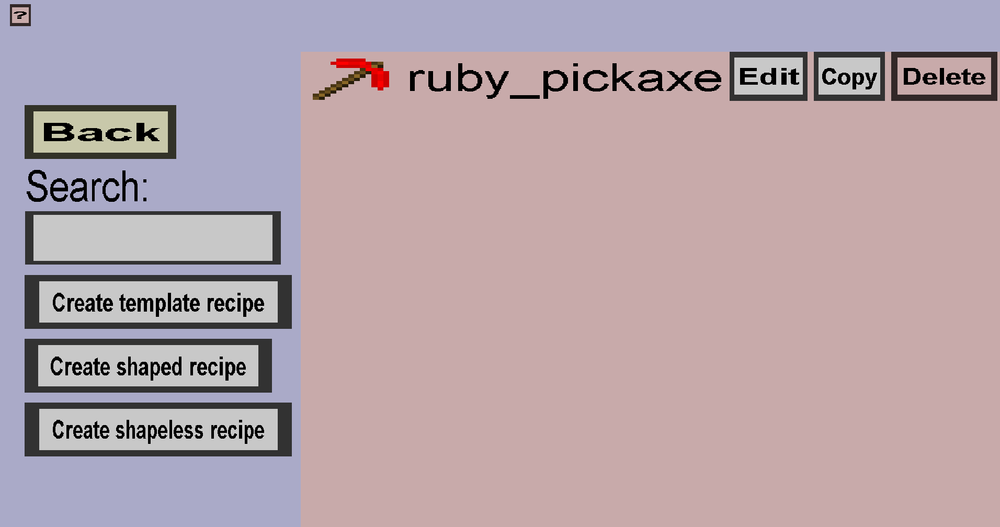

The crafting recipe overview is the root menu from which you can add, edit and delete crafting recipes. It should look like this:
The create recipe buttons, the copy button and the edit button will open up a submenu where you can edit the crafting recipe. For more information about that process, head over to the individual pages of the submenus: